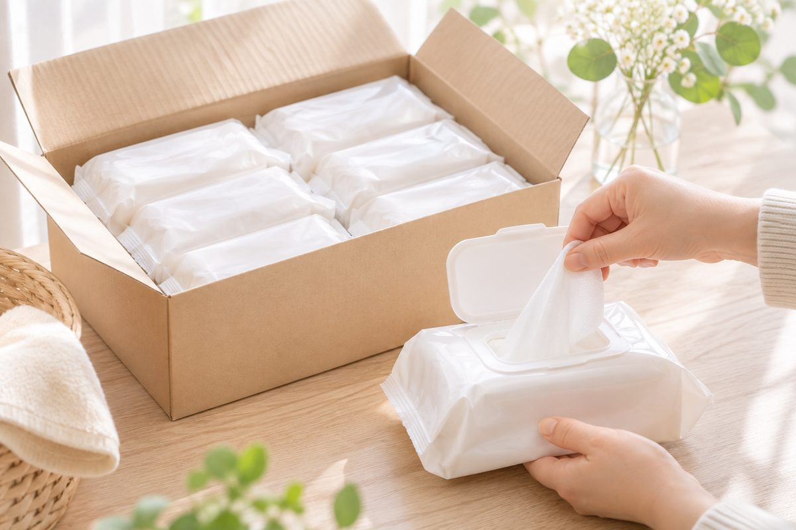
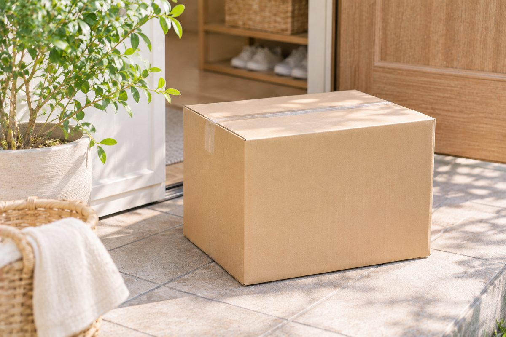
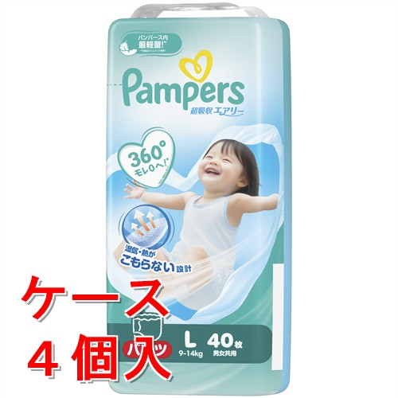
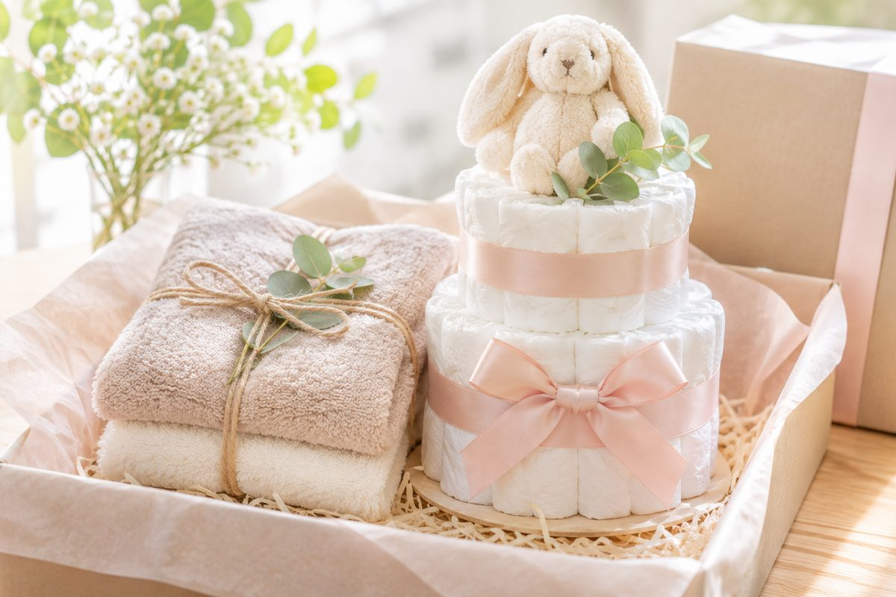
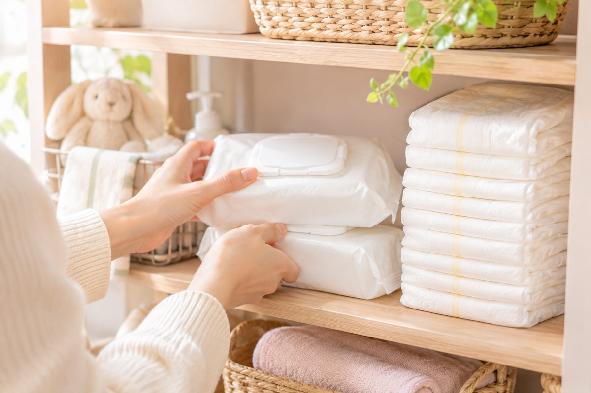

消耗品は「2択」だが、正解は間柄で分かれる
「ベビー用品はもう揃っている」2人目の家庭で、贈る側の安全策として真っ先に浮かぶのが消耗品です。実際、リンベルの調査では、出産祝いで嬉しかったもののうち消耗品（おむつ・おしりふき等）のカテゴリは、1人目の33.0%から2人目の35.3%へ上昇しています。
ただし消耗品なら何でも外さない、わけではありません。当サイトの集計では、代表的な2品目で評価の分かれ方が対照的でした。
- おしりふき：X上の受け取り体験で嬉しい7件／困った0件。消耗品の中で唯一、困った側の具体投稿がゼロだった品目
- おむつ：へその緒屋の100人調査で「もらって嬉しかった」1位の一方、銘柄違い・サイズ違いの困った例も確認できる品目
違いを生むのは品目の良し悪しではなく、「銘柄とサイズを聞ける間柄かどうか」です。この記事では、まず聞けるかどうかで分岐し、聞ける場合の「聞き方」の手順までを具体的に書きます。
この記事は、出産祝いの総合ランキング記事（「二人目の出産祝いは何が正解？」）で2位に入れたおしりふきと7位に入れたおむつを深掘りするものです。
判断フロー：まず「聞ける間柄か」で分ける
- 銘柄・サイズを聞ける間柄（親しい友人・きょうだい・親戚など）→ おむつが第一候補になります。ただし必ず「聞いてから買う」ことが前提です（手順は後述）。
- 聞けない間柄（同僚・目上・久しぶりの知人など）→ おむつ単体は選ばず、おしりふき（厚手・大量）を選んでください。銘柄へのこだわりが比較的緩く、サイズの概念がないためです。
- どちらか迷う場合→ おしりふきに倒すのが安全です。それでも不安な場合は、選べるギフトカードという逃げ道もあります（総合ランキング記事の1位で詳しく書いています）。
以下、品目ごとに根拠と選び方を説明します。
おしりふき：聞けない間柄でも成立する、消耗品の本命

今回の集計で、消耗品の中で唯一、困った側の具体投稿がゼロだった品目です。Xでは「出産祝いに貰って1番助かるのはおしり拭き」という明言や、車でダンボール2箱を持参したことが大きな反響（いいね約4.8万）を呼んだ例がありました。おむつと違い銘柄へのこだわりが比較的緩く、新生児から上の子まで毎日確実に減っていくことが、評価の土台です。
選び方の軸は2つです。
- 厚手タイプを選ぶ：銘柄を指定する肯定意見では、パンパースの厚手タイプが良いという声がありました。薄手よりも厚手のほうが「贈り物としての満足感」と実用性の両方で評価される傾向です。
- 量で贈る：単品ではなくケース単位のまとめ買いが前提です。受け取り側の熱量を作ったのは「量と届け方」でした。肌に触れるものなので、無添加・低刺激系が無難です。
価格について：ケース品でまとめ買い数千円規模が目安です。価格は販売店・時期で変動するため、この記事では金額を断定せず、リンク先でご確認いただく形にしています。

おむつ：銘柄とサイズを「聞ける間柄」だけの、最強の実用品

おむつ自体の評価は決して低くありません。へその緒屋が100人に行った調査では「もらって嬉しかったもの」の1位がおむつでした。評価を分けたのは、銘柄とサイズです。
Xの集計では、「何を使っているか聞いてくれた」うえで箱でもらったことが「拝むレベルでありがたかった」と語られる一方、新生児サイズはすぐサイズアウトして余り、すでにMサイズの子にSサイズが届いた失敗例もありました。銘柄が合わないと使えないため、聞けない間柄ではおむつ単体は選ばないのが鉄則です。
聞ける間柄で贈る場合の要点は次のとおりです。
- サイズはS〜Mを軸に：新生児サイズはサイズアウトが早く、余らせる失敗が目立ちます。相手の子の現在のサイズを聞いたうえで、S〜Mサイズを箱（ケース）で贈るのが基本形です。
- 銘柄は相手の使用銘柄が正解：銘柄ごとの優劣ではなく、「その家庭が普段使っている銘柄と一致しているか」がすべてです。この記事では銘柄の序列はつけません。
価格について：おむつはサイズ・枚数違いのセットが多く、金額の比較が誤解を招きやすいため、この記事では価格を記載していません。ケース品で数千円規模が目安です。購入前にリンク先で「サイズと枚数」を必ず確認してください。

銘柄・サイズの「聞き方」手順
おむつで失敗しないための核心は、聞き方です。ポイントは「何が欲しい？」ではなく「何を使っている？」と聞くことです。前者は相手に「おねだり」の負担をかけますが、後者は日常の確認として自然に聞けます。
手順は次のとおりです。
- タイミング：出産報告への返信のついでが最も自然です。「落ち着いたら、普段使っているおむつの銘柄とサイズを教えて。箱で送るから」という一言で完結します。
- 聞く項目は2つだけ：銘柄と、現在のサイズ。この2点がそろえば買い間違いはほぼ防げます。
- 聞いたらそのまま買う：聞いた銘柄・サイズから外れた「似たもの」に置き換えないことが、聞いた意味を消さないための注意点です。
※上記の聞き方は当サイトが手順として整理した文例であり、特定の個人の体験談ではありません。受け取り側で「聞いてくれた」ことが高く評価されたのは、調査とSNS上の声で確認できた事実です。
なお、粉ミルクはこの手順でも単体贈りをおすすめしません。銘柄固定が最も強い品目で、単体で贈ることへの否定の声が見られたためです。消耗品でまとめたい場合も、おしりふき＋おむつ（聞ける場合）の組み合わせまでに留めてください。
おむつケーキは「形」ではなく「中身」で判断する

見た目の華やかさから候補に上がりやすいおむつケーキですが、受け取り側の評価は分かれます。判断基準は形ではなく中身です。
- 肯定されたもの：中身のおむつの銘柄が選べるタイプで、名入り今治タオルなど実用的な付属品があるもの
- 不評だったもの：一枚ずつ輪ゴムで固定された巨大なもの（「解体が面倒」「場所を取る」という声。困った側の投稿には大きな反響がついた例もあります）
つまりおむつケーキも、通常のおむつと同じく「銘柄が合うか」が前提です。銘柄が選べないタイプは、聞けない間柄への無難な選択肢にはなりません。
予算と量の目安
消耗品のケース買いは、数千円規模が中心です。出産祝いの関係性別の相場（友人3,000〜10,000円、同僚3,000〜5,000円、上司5,000〜10,000円、きょうだい・親戚10,000〜30,000円＝各社相場表の共通レンジ）と比べても、ケース1箱で相場の下限〜中位に収まります。
- 聞ける間柄で予算に余裕がある場合は、おむつのケースに上の子へのプチギフト（1,000〜3,000円）を同梱すると、2人目ギフトとしての満足度が上がります（考え方は総合ランキング記事の9位の節で詳しく書いています）。
- 量については「多すぎて困る」という声はおしりふき・おむつでは確認できませんでした。毎日確実に消費されるものなので、ケース単位を恐れる必要はありません。ただし置き場所の都合があるため、配送で箱ごと届ける形が無難です。
まとめ

- 消耗品の分岐点は品目ではなく「銘柄・サイズを聞ける間柄かどうか」です。
- 聞ける間柄ならおむつが最強の実用品になります。聞き方は「何が欲しい？」ではなく「何を使っている？」。サイズはS〜Mを箱で、新生児サイズは避けてください。
- 聞けない間柄では、おむつ単体ではなくおしりふき（厚手・ケース単位）を選ぶのが、根拠のある安全策です。
- おむつケーキは形ではなく中身（銘柄が選べるか）で判断してください。
この記事について
広告・PRについて
※この記事にはアフィリエイト広告（PR）が含まれます。記事内のリンクからご購入いただくと、当サイトに紹介料が支払われる場合があります。なお、商品の並び順や評価は広告の有無ではなく、下記の調査根拠に基づいて決めています。
価格は販売店・時期で変動するため、この記事では金額を断定していません。最新の価格・在庫・セット内容（サイズ・枚数）は各リンク先でご確認ください。
調査根拠・出典
調査データの出典：リンベル、へその緒屋各調査、およびX上の体験談集計（2026年11月）。受け取り体験は調査結果とSNS上の声をもとに構成しており、特定の個人の体験談として創作したものではありません。